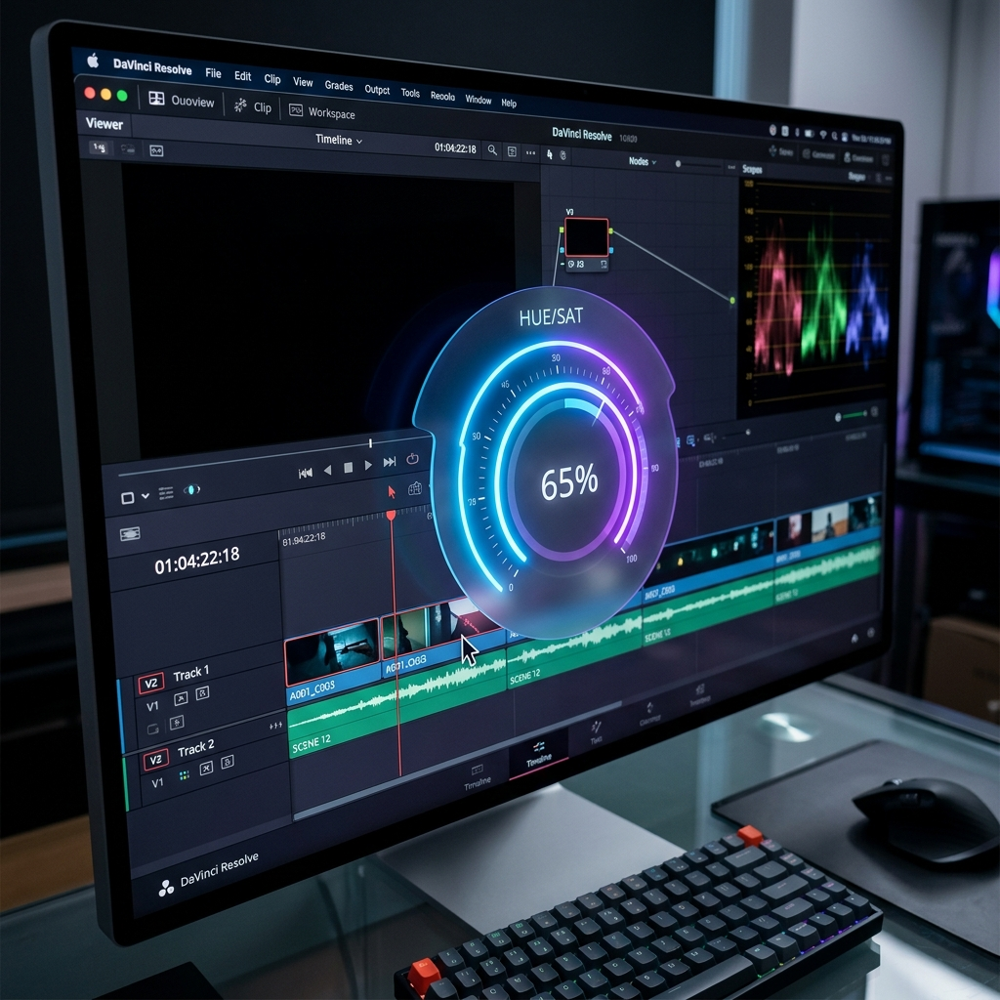
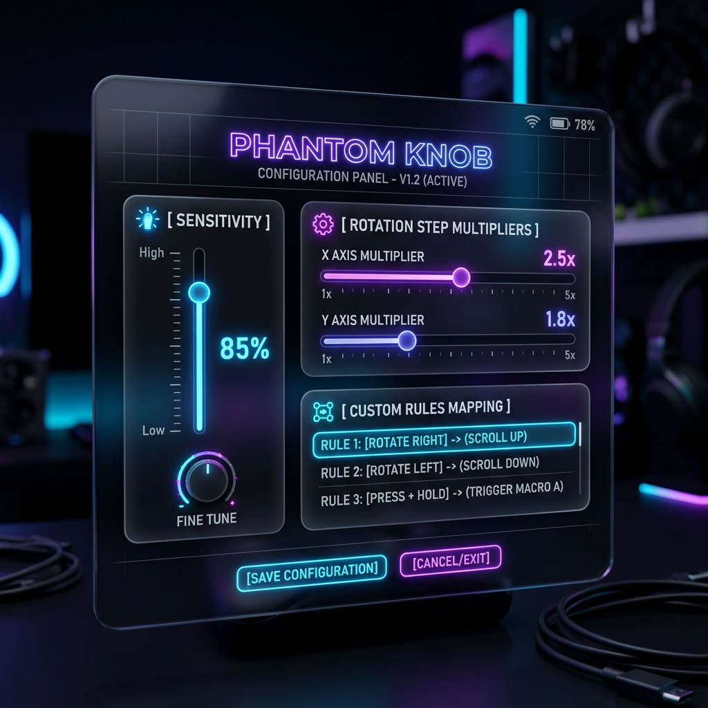
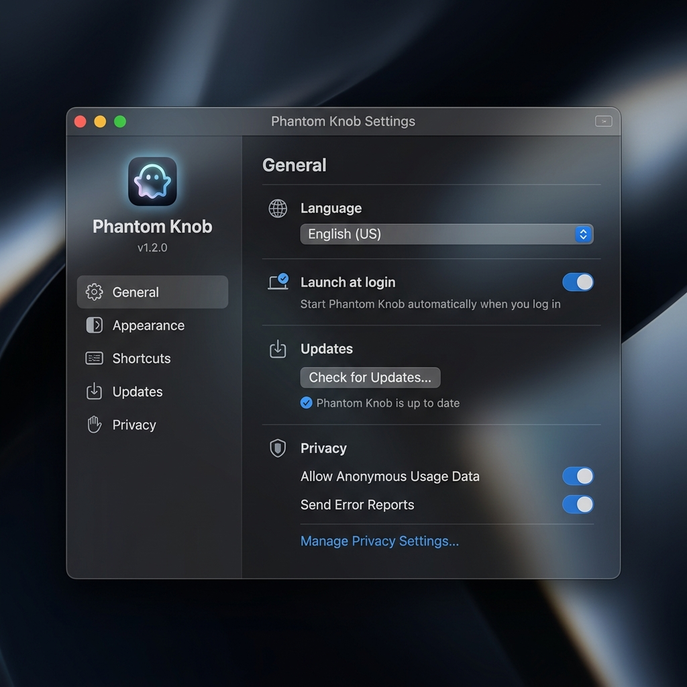

体验自然的触控板手势如何变成流畅的旋钮控制动作。
触控板精准模拟（30 秒演示即将推出）

高对比度覆层跟随光标位置实时显示

按 C 键即可为任意滑块快速配置控制规则

精细调节手势速度、倍率和语言偏好
一种全新的交互方式，改变你与 Mac 上每一个滑块、旋钮和时间线的工作方式。
你的触控板早就能做到这一点——只是没人告诉你。双指旋转，就是你指尖下的物理旋钮。
三种变速模式让你几秒内扫过整条时间线，再精确微调到单帧。按住数字键 1–9 可实时成倍调速。
不需要上千元的控制台，不需要线缆，不需要桌面空间。你的触控板就是唯一需要的旋钮——并且它跟着你的 MacBook 随身携带。
光标悬停在任意 App 的任意滑块上，旋转即可。PhantomKnob 借助 macOS 辅助功能 API 在系统级别检测并控制 UI 元素。
滚动、捏合、轻扫——全部正常工作。PhantomKnob 只在你主动选择时才激活，智能检测绝不会误触发。
内置 DaVinci Resolve、剪映 (CapCut)、Logic Pro 等专业软件的优化预设。打开应用即可开始旋转，无需任何配置。
悬停目标滑块，按 C 键即可为其指定旋钮样式、映射规则与控制布局。一次配置，永久生效。
有关于 Phantom Knob 的疑问？请在下方寻找答案。
Phantom Knob 直接绑定 macOS Multitouch API 来监控原始手指坐标。通过分析它们的空间排列与触摸动态，它能以极高精度识别圆形旋转手势，并向目标应用窗口发送精准对应的滚动滚轮或键盘按键事件。
完全安全。Phantom Knob 申请辅助功能权限仅仅用于识别光标下的可调 UI 元素，并模拟滚动与按键以达到调整参数的目的。所有的手势数据处理均在本地进行，绝不会向网络发送任何信息。
当会话限时结束，Phantom Knob 将自动退出参数控制状态。这没有任何惩罚或强制收费——你只需点击菜单栏或按下全局热键组合（⌘⌥K）即可重新开始新的一段会话，这仅仅会引入 2 秒的激活延迟。
当然可以！只需将光标悬停在任意自定义滑块上，按下自定义热键（默认是 C），然后从弹出的 HUD 配置面板中选择合适的控制布局映射方式，就能即刻对其进行旋转手势控制。
PhantomKnob 与任何支持多点触控（Multi-Touch）的 Mac 触控板兼容——包括每一款 MacBook 的内置触控板和 Apple Magic Trackpad。应用中内置了兼容性测试模块，几秒钟即可确认你的硬件是否支持。